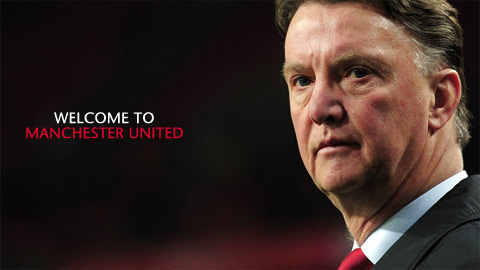

Season 2014-15
Sunday 13 May 2014
Man Utd 8 - 2 Arsenal
Tables
| # |
Team |
P |
Pts |
| 1 |
Man Utd |
38 |
89 |
| 2 |
Chelsea |
38 |
83 |
| 3 |
Liverpool |
38 |
68 |
| 4 |
Arsenal |
38 |
68 |
| 5 |
Spurs |
38 |
60 |
Manager Profile

Profile
Previous Clubs/Countries: Ajax, Barcelona, Netherlands, AZ, Bayern Munich
Honours: Champions League: 1995; Intercontinental Cup: 1995; UEFA Cup: 1992; UEFA Super Cup: 1995, 1998; Eredivisie: 1994, 1995, 1996, 2009; KNVB Beker: 1993; Spanish Primera Division: 1998, 1999; Copa del Rey: 1998; German Bundesliga: 2010; DFB-Pokal: 2010; DFB Supercup: 2010
"I am who I am and I have my own ways. I'm not going to change and I have no desire to." These words aptly sum up the obstinate, eccentric and media-loathing yet innovative and inimitable genius of Louis van Gaal.
The Amsterdam-bred coach boasts one of the finest résumés in European football and while he has experienced his fair share of highs and lows, few can dare to question his legacy.
Nicknamed the "Iron Tulip" and the "Czar of Alkmaar", Van Gaal's strict principles have served him well and he has managed some of the most successful sides in European history.
His professional football career began as a 20-year-old in his hometown, for Ajax, but after failing to make the grade, he enjoyed successful spells as a midfielder for Royal Antwerp, Telstar, Sparta Rotterdam and finally AZ Alkmaar, where he hung up his boots in 1987 to become the club's assistant coach.
A year later Van Gaal returned to take up the same role at Ajax where he learned his trade under Leo Beenhakker before replacing him in 1991. Educated in the club's 'Total Football' philosophy of the 1970s, Van Gaal promoted an attacking brand of football which led the Amsterdammers to three Eredivisie titles, a UEFA Cup and a first Champions League triumph in more than two decades, during his six-year tenure. Players such as Edwin van der Sar, Frank Rijkaard, the De Boer brothers, Edgar Davids, Clarence Seedorf, Jari Litmanen, Marc Overmars and Patrick Kluivert were all among his '95 Eredivise and European Cup-winning side -- often labelled as Ajax's greatest ever XI.
Many European clubs had been keeping tabs on Van Gaal's progress and the Dutch coach inherited a Barcelona side which had just won a cup treble under Bobby Robson's stewardship, in 1997. In his first season, Van Gaal ended Barcelona's 37-year wait for a Primera Division and Copa del Rey double and the Catalan outfit established themselves as the leading force in Spanish football by retaining the league title the following season.
However, Van Gaal is a man who does not like to see his authority undermined and he became embroiled in heated confrontations with the club's supporters and playing staff, notably Rivaldo, who he forced to play on the left-wing, against the player's demands. His term reached a boiling point in the 1999-2000 season and after a trophyless campaign, Van Gaal stepped down to coach the Netherlands' in their ill-fated 2002 World Cup bid, the Oranje failing to qualify for the finals in Japan and South Korean for the first time since 1986.